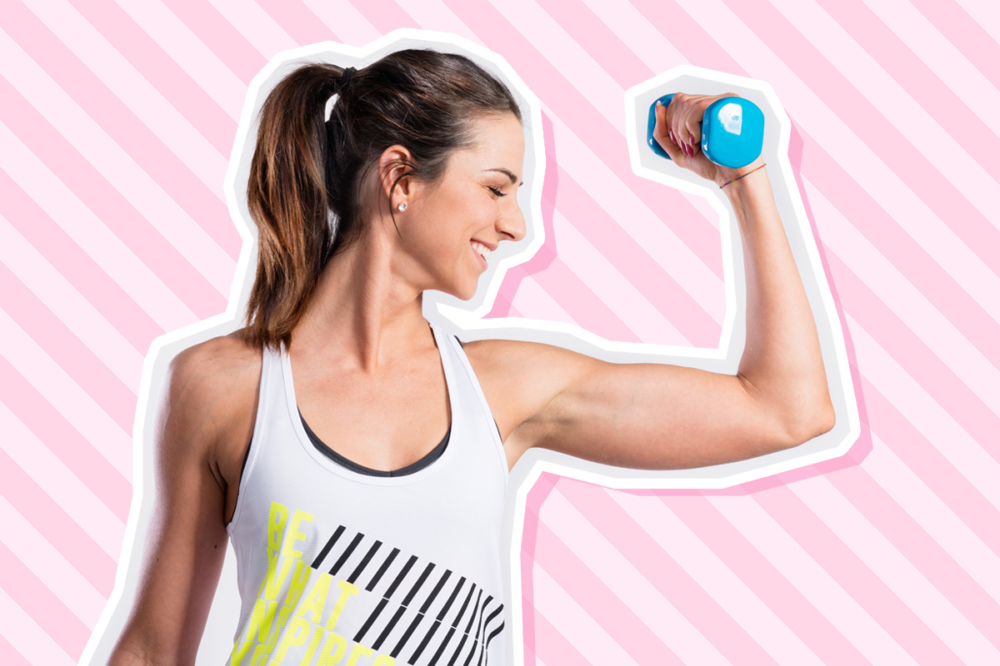
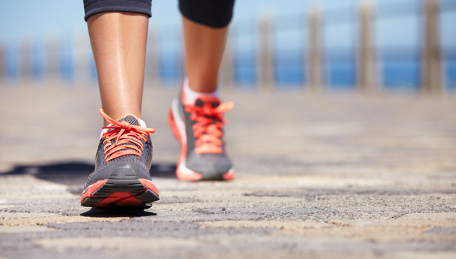

Para establecer el día, debe despertarse correctamente, lentamente y con amor para despertar su cuerpo. Esto se puede hacer con ejercicios simples para ejercicios matutinos, que no tomarán más de 15 minutos.
¿En qué ejercicios puede consistir tu ejercicio?
Ejercicios de flexibilidad. El mismo sorbo de la mañana ya es un calentamiento fácil, incluso si está acostado en la cama. El ejercicio puede consistir completamente en ejercicios de flexibilidad: ¡yoga matutino! Y puede y debe hacerse incluso sin levantarse de la cama, como la opción de la noche (hablaremos de esto en otra ocasión).
Ejercicios explosivos. Se debe incluir al menos un ejercicio explosivo en el entrenamiento de la mañana: saltar de una sentadilla, estocadas, saltos largos, burpies.
Cardio
Cardio fácil. Si te levantas con un humor alegre y estás listo para girar las montañas, en lugar de tomar un ligero sorbo en la cama, puedes organizar un entrenamiento cardiovascular. La opción más fácil es ir a correr por 20 minutos. Si el clima fuera de la ventana no tiene esto o si realmente no le gusta correr, entonces puede intentar correr en el lugar, hacer sentadillas, flexiones u opciones dinámicas para la barra.

Bailando.
De hecho, este es el mismo entrenamiento cardiovascular, pero además de acelerar el sistema cardiovascular y los pulmones, tiene otra ventaja: ¡cargar el buen humor para el día que viene! Sí, durante cualquier entrenamiento, el cuerpo comienza a producir hormonas de alegría y placer, pero al bailar esto ocurre muchas veces más rápido y el efecto es más fuerte. Para poder bailar bellamente no es necesario para esto.
